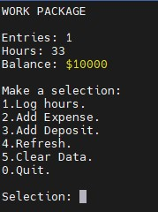

Work package software will be written that keeps track of the number of entries, hours logged, and account balance. This software will be run several times by different workers. It must remember all entries after each worker his/her data. This will be accomplished by mapping to a binary file that the program will read from and write to.
The software will present a menu as follows:

It will display the number of entries, the total hours logged, and the account balance. The user has the option to:
1.Log hours
2.Add Expense
3.Add Deposit
4.Refresh
5.Clear Data
0.Quit
To assist you with the workshop, a blank WorkData.bin binary file has been provided.
WorkData.bin assumes the number of entries is an integer, the hours logged is an integer, and the account balance is a double.
When log hours is selected, the number of entries is incremented, and the entered hours is added to the existing hours.
When add expense is selected, the entered amount is subtracted from the account balance.
When add deposit is selected, the entered amount is added to the account balance.
Refresh will refresh the data on the menu. This is needed only when two workers are entering data at the same time.
Clear data will zero the entries, hours logged, and account balance.
Please mail all files including the Makefile and the answers to the questions to: miguel.watler@senecacollege.ca
NB: My last name is Watler, not Walter.